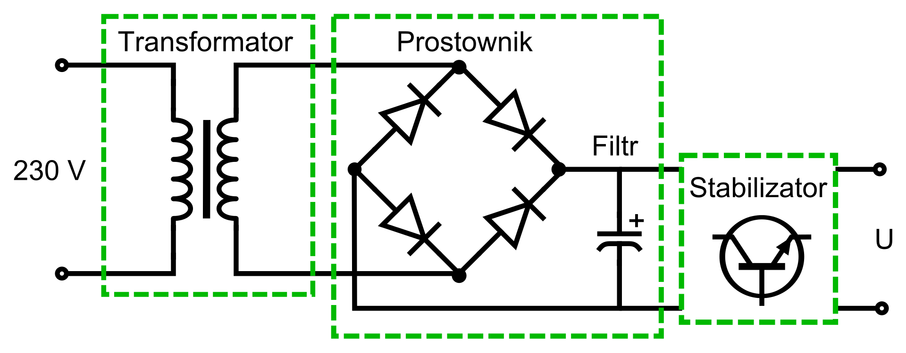
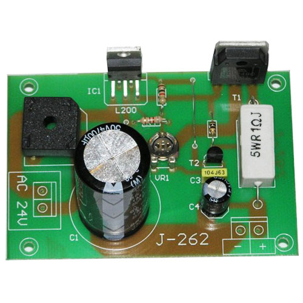

Zasilacz Stabilizowany

Jest to urządzenie służące do zasilania prądem o ustalonym napięciu lub rzadziej o ustalonym natężeniu innych obwodów i urządzeń elektrycznych.
Charakteryzuje się bardzo dużą stabilnością stabilizowanego parametru.
Głównymi elementami zasilacza stabilizowanego prądu stałego są:
1.Transformator lub przetwornica
2.Prostownik z kondensatorem zbiorczym
3.Stabilizator
4.Filtr wyjściowy
Stabilizatory dzielą się ze względu na sposób stabilizacji na:
Parametryczne – wykorzystywane jako źródło napięcia odniesienia (diody Zenera)
Kompensacyjne – zawierające układ ze sprzężeniem zwrotnym oddziałującym na element regulacyjny
Podział rodzaju pracy:
O działaniu ciągłym i impulsowym
Stabilizator kompensacyjny
Ponieważ napięcie wyjściowe zmienia się wraz ze zmianami napięcia sieci i prądu obciążenia, obwód sprzężenia zwrotnego porównując napięcie wyjściowe z napięciem odniesienia dokonuje takiej zmiany w wysterowaniu elementu regulacyjnego (np. tranzystora szeregowego), jaka jest konieczna do utrzymania napięcia wyjściowego na stałym poziomie. Obecnie do stabilizacji napięcia (do kilkudziesięciu V) i prądu (do kilku A) powszechnie wykorzystywane są elektroniczne stabilizatory scalone zawierające główne elementy składowe w jednej obudowie.
